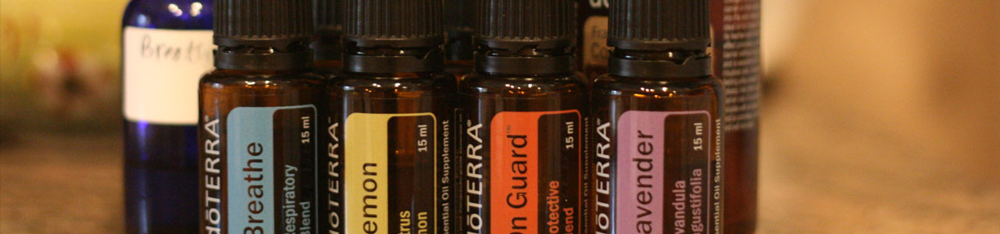

-

玫瑰潤澤皂
玫瑰精油加上珊瑚紅礦土，滋潤保濕肌膚效果佳。
玫瑰精油、珊瑚紅礦土、椰子油、橄欖油、芥花油、棕櫚硬脂。
-

尤加利清檸皂
尤加利與檸檬草的天然清爽，結合出兼具清爽不黏膩的尤加利清檸皂，清潔力佳。
檸檬草、尤加利精油、荷荷芭油、橄欖油、椰子油。
-

檸檬薰衣草舒緩皂
利用珍貴植物油中的特殊脂肪酸，不傷害刺激肌膚，加上檸檬與薰衣草的鎮靜，降低將肌膚的不適應感。
檸檬精油、薰衣草精油、橄欖油、椰子油、甜杏仁油、乳油木果脂、米糠油。
-

薄荷茶樹舒緩皂
薄荷與茶樹的天然清爽，結合出兼具清爽又保濕的檸檬茶樹香，清潔力佳。
薄荷精油、茶樹精油、橄欖油、椰子油、甜杏仁油、棕櫚油、乳油木果脂。
-

紫草木果皂
乳油木果、米糠油，含豐富的維他命、蛋白質，搭配紫草，對於老化肌膚的更生更顯柔軟舒適。
紫草浸泡油、乳油木果脂、甜橙精油、橄欖油、椰子油、甜杏仁油、棕櫚油。
-

洋甘菊護膚皂
洋甘菊浸泡橄欖油，加入甜杏仁油及牛奶，散發清甜的香味。
洋甘菊、橄欖油、牛奶、椰子油、甜杏仁油、棕櫚油、乳油木果脂。
